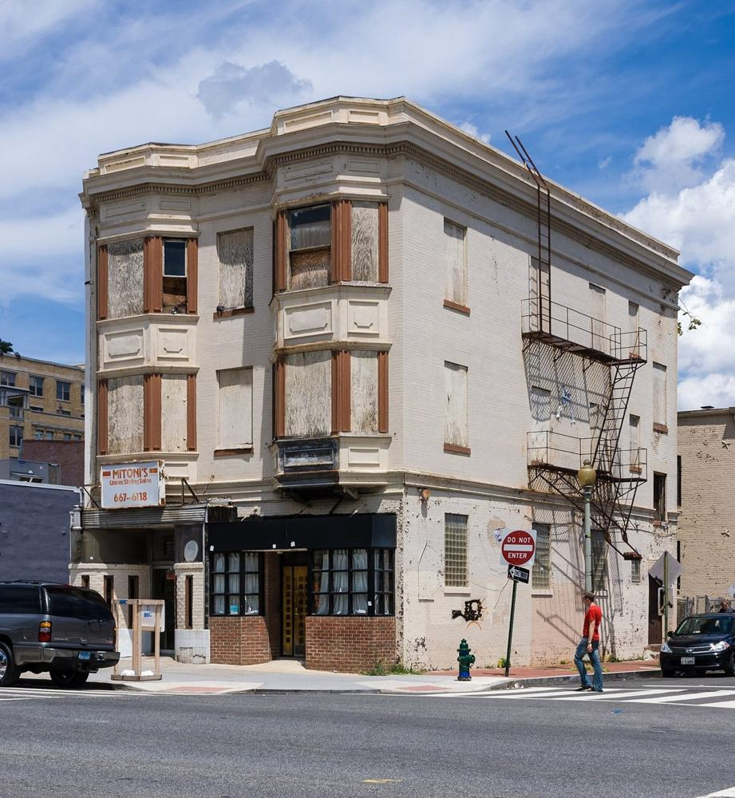

故事
Miles Davis 聽完她的專輯，親自邀她到紐約演出。她是歌手兼鋼琴手 Shirley Horn，1934 年生在華盛頓。她四歲學鋼琴，十二歲就在大學裡上鋼琴和作曲課。
她有機會進很有名的音樂學院，家裡卻付不起學費。1960 年，她錄了第一張專輯 Embers and Ashes。Miles 聽了，公開稱讚她，還邀她到紐約和自己同一晚登台。

後來她為了陪女兒長大，大多留在華盛頓演出。她唱得很慢、很輕，鋼琴常常替她把話講完。下次聽她的歌，分清楚哪一句是她唱的，哪一句是鋼琴回答的。
故事後面
Shirley Horn 從小學鋼琴，有機會進名校卻付不起學費。她在華盛頓邊彈邊唱，慢慢累積名聲。
一九六〇年的第一張專輯讓 Miles Davis 很欣賞，邀她到紐約和自己同台。
後來她為了家庭大多留在華盛頓，直到八、九十年代才又被更多人認識。她唱得極慢、極輕，鋼琴常常替她把話說完。
這樣聽
聽她唱一句、鋼琴回一句，中間留很多空白。
逐句英文
Miles Davis heard her album and personally invited her to play in New York.
She was singer-pianist Shirley Horn, born in Washington in 1934.
She began piano at four and was taking university piano and composition classes at twelve.
She had a chance at a famous conservatory, but her family couldn't afford it.
In 1960 she recorded her first album, Embers and Ashes.
Miles heard it, praised her publicly and invited her to share a bill with him in New York.
Later, to raise her daughter, she mostly stayed and performed in Washington.
She sang slow and soft, and her piano often finished her sentences.
Next time you hear her, tell apart which lines she sings and which her piano answers.
查證筆記與出處
學院是 Juilliard，稿裡沒點名。專輯錄音一九六零年、發行年份條目有一九六零與一九六一兩種，稿裡寫「錄了」。「同一晚登台」是條目「演奏中場」的意譯，請核對。
一分鐘影片版在 Instagram @jazz101tw。